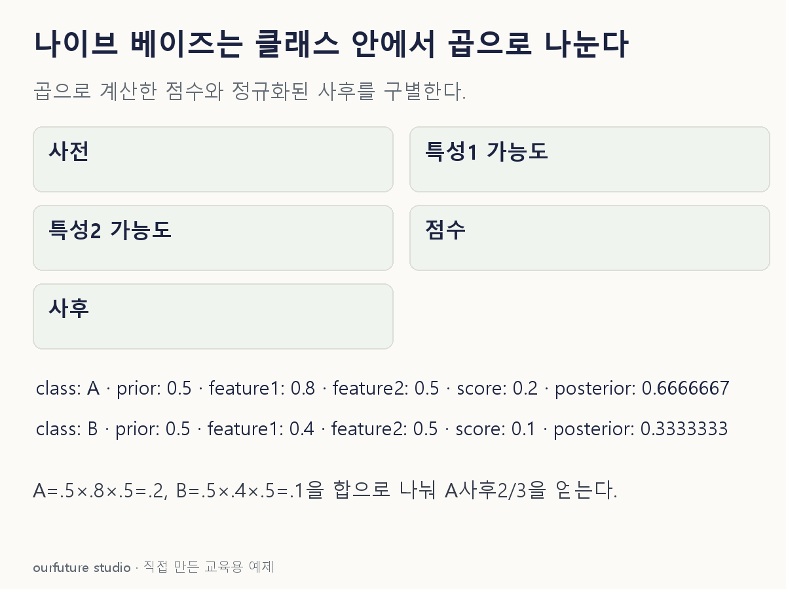

조건을 바꾸며 확인하기
A/B가 전체이며 두 이진 관찰값이1인 경우다. 조건부 독립의 타당성·확률 보정·분류성능을 검증하지 않는다.
설명 그림과 비교하기
아래 그림과 표는 고정된 설명 예제입니다. 기본·변형 중 어떤 조건인지 캡션을 읽고, 바꾼 입력의 결과는 계산 칸에서 확인하세요.

같은 문제를 직접 골라 보기
사전 A/B 각 0.5. 두 관찰 특성의 가능도는 A=(0.8,0.5), B=(0.4,0.5). 조건부 독립을 가정한다.
조건을 더 바꾸면?
A/B 점수가 각각 0.20,0.10일 때 A의 정규화된 사후확률은?
변형 풀이 확인
2/3, 약 0.667.
공통 관찰 확률에 해당하는 점수 합 0.30으로 A 점수 0.20을 나눈다. 두 클래스가 전체라는 조건을 쓴다.
클래스를 고정한 뒤, 특성 가능도를 곱한다.